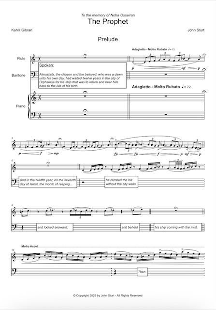
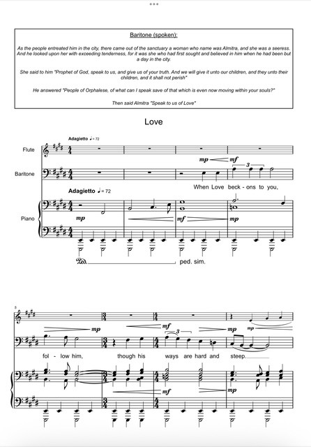

Then the gates of his heart were flung open, and his joy flew far over the sea." 
Here opens Khalil Gibran´s most famous work, "The Prophet", an important and beautiful text of poetry and philosophy. In 2025, I commissioned John Sturt to write a setting of this text. The result is a charming hour-long song cycle with engaging narration.
The narrator opens this setting in a dialogue with the flute, after which Gibran's hero starts instructing his people on a variety of subjects.
He says : "When love beckons to you, follow him,
Though his ways are hard and steep.
And when his wings enfold you yield to him,
Though the sword hidden among his pinions may wound you.
And when he speaks to you believe in him,
Though his voice may shatter your dreams.

In the next chapter, Almustapha speaks of Children, with the famous quote "Your children are not your children. They are the sons and daughters of Life’s longing for itself."
This is one of my favorite movements of this setting, with John's playful Mozartian writing. It can be listened to below.
The next movements adapted in this setting are: Freedom, Giving, Work, Joy and Sorrow, Death and finally, The Farewell.
You can click on the poster to listen to this extract from one of our performances.